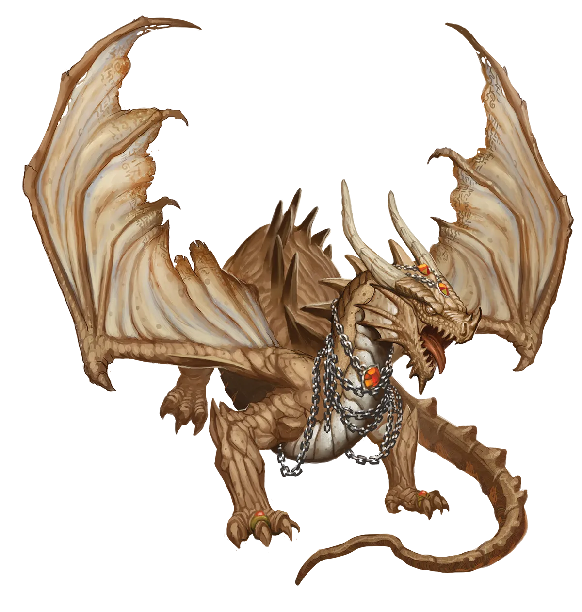
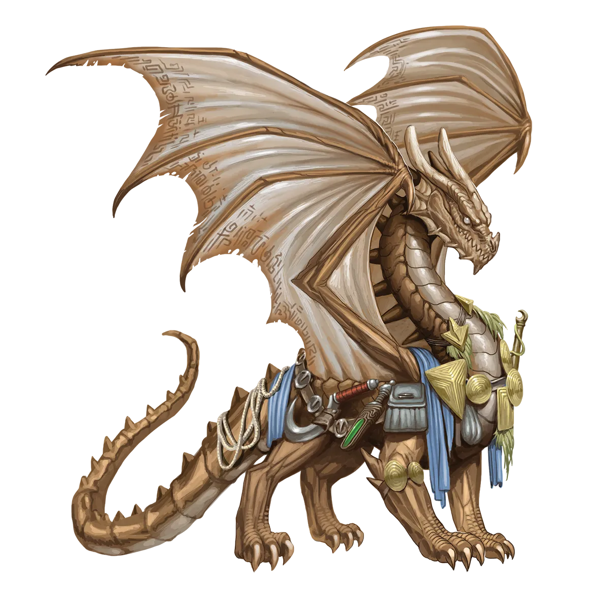

奥秘龙类还是奇术使龙类？
在我看来，无论是奥秘龙类还是奇术使龙类，这两个名字都不太准确。不过，这并不意味着我有更好的替代方案。秘学龙类这个名字倒是没问题，如果它还不是包含这些龙类在内的整个血统家族名称的话。我曾就此采访过不少它们，它们自己也决定不了应该称自己为奥秘龙类、奇术使龙类还是其他什么。这两个名字都让人困惑，但至少奥秘龙类不会让你与另一个血统、同样也是奇术使的龙类混淆！
秘仪龙 Occult Dragon |
|
|
有时被称为奇术使龙类，奥秘龙类经常生活在凡人社会中。即使是最顽固的传统派，也几乎不会栖息在遥远的洞穴、石窟或林地之中。奥秘龙类的巢穴是一座城市，他们的宝库则是充满奇术意义的秘密与物品的档案库。由于奥秘龙类过着与普通龙类截然不同的生活，他们对执行“永恒之光”仪式抱有特别的倾向也就不足为奇了。通过探索自身的一切可能性，奥秘龙类希望能揭示不为人知的秘密，而未知的诱惑是相当大的。奥秘龙类并不自傲到认为他们的同类必有一族创造了这个仪式，但鉴于仪式运作和影响联系的方式，甚至能够将多余能量溢出以治愈另一个生物并形成终身羁绊，他们确实认为奥秘龙类的影响是极有可能的。一个流行的奥秘龙类理论是，仪式可能由数个不同血统的龙类共同创造，而非出自一位孤独的天才。就传统派奥秘龙类而言，他们并不真正将仪式与任何耻辱或负面看法联系在一起。相反，他们更愿意探索仪式如何改变了永光龙类身上留下的联系与奥秘印象，尤其是如果他们认识仪式前后的这条龙。这意味着，理论上，奥秘龙类的社交群体可以混合永光龙类与传统派龙类，而几乎不会产生社会不和谐，尽管在实践中，奥秘龙类本来就很少与其他龙类聚集。 虽然永光龙类和传统派奥秘龙类的观点和总体倾向大致相同，但他们最大的分歧在于行动的相对节奏、紧迫性和危险程度。传统派奥秘龙类虽然因为生活在凡人之中而能够理解永光龙类的观点，但他们仍然倾向于更为谨慎行事，并着眼长远。与此同时，永恒奥秘龙类则热切而频繁地加入冒险队伍。毕竟，有什么比在建立和考验与其他志同道合者之间的强大羁绊和联系的同时，还能强化仪式魔力的更好方式呢？此外，冒险者往往拥有并挖掘出具有惊人历史和奇术意义的秘密与物品。在大多数情况下，奥秘龙类对同伴并不特别挑剔，但他们无法容忍那些在考古遗址、档案库和失落地下城中横冲直撞、毁坏一切，却毫不顾及脚下践踏的历史和秘密的冒险队伍。 奥秘龙类努力与其他冒险队伍成员建立牢固的羁绊，但他们也寻求检验和考验这些羁绊，这意味着虽然他们是坚定的朋友，但有时也会窥探他人的秘密或逾越界限，让人感到不适。虽然法师是奥秘龙类最明显的职业选择，但实际上，奥秘龙类发觉自己非常适合各种调查员型和魔法型职业。在法师之后，诗人、术士、魔契师最为常见。 奥秘龙类还是奇术使龙类？ 在我看来，无论是奥秘龙类还是奇术使龙类，这两个名字都不太准确。不过，这并不意味着我有更好的替代方案。秘学龙类这个名字倒是没问题，如果它还不是包含这些龙类在内的整个血统家族名称的话。我曾就此采访过不少它们，它们自己也决定不了应该称自己为奥秘龙类、奇术使龙类还是其他什么。这两个名字都让人困惑，但至少奥秘龙类不会让你与另一个血统、同样也是奇术使的龙类混淆！ 秘仪龙特质 Occult Dragon Traits 你出身于一脉兼收并蓄、一生大多以类人形态隐居都市的学者――秘仪龙世系。 |
  |